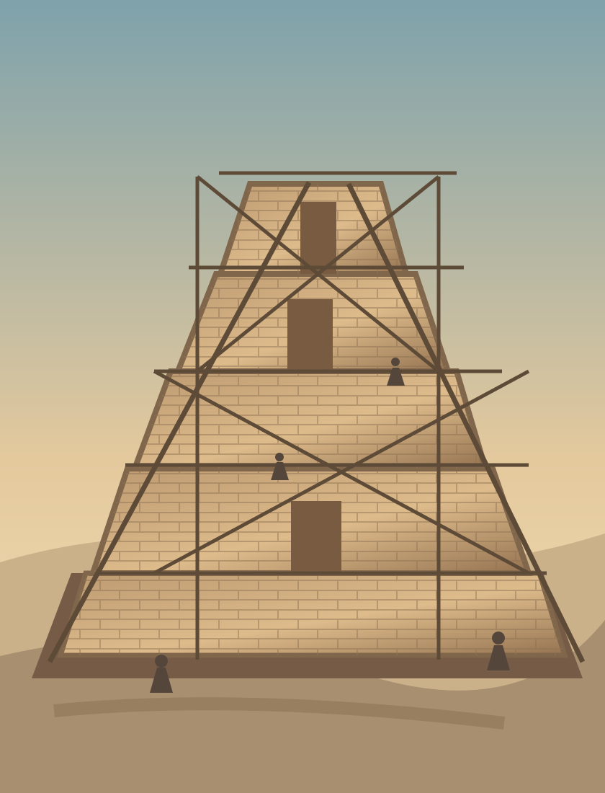

11:1 Tenía entonces toda la tierra una sola lengua y unas mismas palabras.
11:2 Y aconteció que cuando salieron de oriente, hallaron una llanura en la tierra de Sinar, y se establecieron allí.
11:3 Y se dijeron unos a otros: — Vamos, hagamos ladrillo y cozámoslo con fuego. Y les sirvió el ladrillo en lugar de piedra, y el asfalto en lugar de mezcla.
11:4 Y dijeron: — Vamos, edifiquémonos una ciudad y una torre cuya cúspide llegue al cielo, y hagámonos un nombre, por si fuéremos esparcidos sobre la faz de toda la tierra.

11:5 Y descendió Jehová para ver la ciudad y la torre que edificaban los hijos de los hombres.
11:6 Y dijo Jehová: He aquí el pueblo es uno, y todos éstos tienen un solo lenguaje; y han comenzado la obra, y nada les hará desistir ahora de lo que han pensado hacer.
11:7 Ahora, pues, descendamos, y confundamos allí su lengua, para que ninguno entienda el habla de su compañero.77
11:8 Así los esparció Jehová desde allí sobre la faz de toda la tierra, y dejaron de edificar la ciudad.
11:9 Por esto fue llamado el nombre de ella Babel, porque allí confundió Jehová el lenguaje de toda la tierra, y desde allí los esparció sobre la faz de toda la tierra.78
Notas del editor
- 77En este pasaje Dios habla en primera persona del plural al igual que en Génesis 1:26. Podría ser una alusión a la Trinidad. También se ha propuesto que sea un plural mayestático, aunque esta explicación resulta discutida en el contexto del hebreo bíblico. ↩
- 78Babel se asocia con la palabra hebrea "balal, que significa "confundir" o "mezclar". ↩